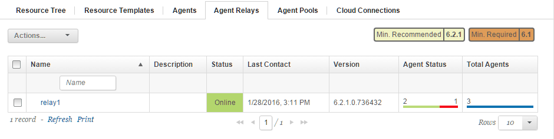

Starting agent relays
To start an agent relay, run its batch file or shell script.
Make sure that the server is running.
- Go to the agent_relay_installation\bin directory
- Run the run_agentrelay.cmd batch file (Windows™), or ./agentrelay run (UNIX™ or Linux™).
To monitor the status of the relay and the agents that are connected to it, click Resources > Agent Relays. This tab shows the number of active and offline agents that are connected to each relay, as shown in the following figure:

For more information about an agent relay, in the Name column, click the relay.
Parent topic: Starting HCL UrbanCode Deploy